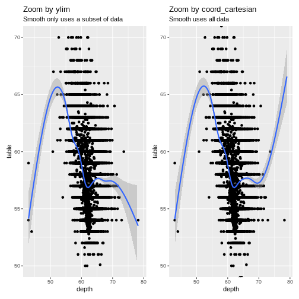
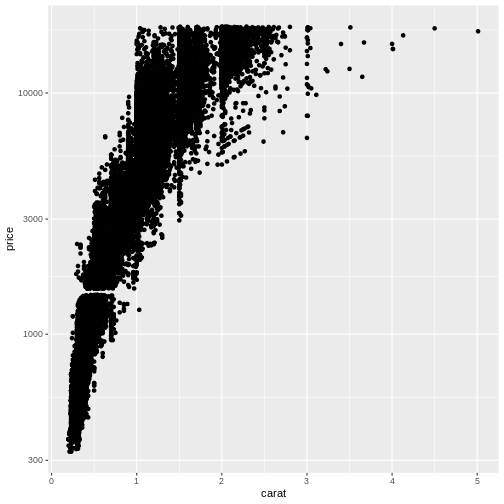
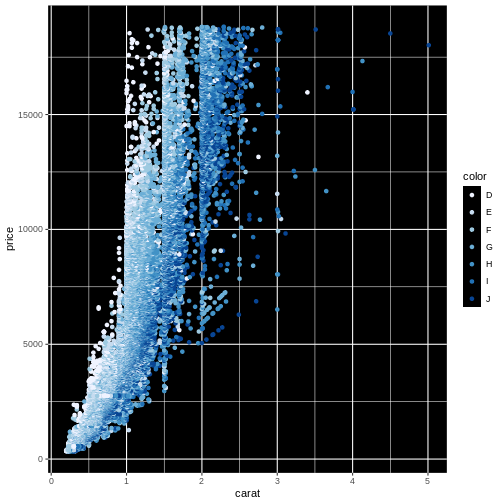

Scaling and coordinates
Last updated on 2025-12-15 | Edit this page
Overview
Questions
- How can we adjust the scales in a plot?
- How can we zoom-in to specific parts of a plot?
- How can we change the colours of the plot?
- How do I make a pie-chart?
Objectives
- Learn to zoom by adjusting scales
- Learn how to make log-scale plots
- Learn why you should not make a pie-chart
- Learn how to control the colour-scale
Changing scale and coordinates
ggplot chooses a coordinate system for us. Like bins in histograms, that coordinate system might not be the right one for our data.
One of the more commonly cited “rules” for plots and graphs is that the coordinate system should begin at zero. And ggplot does not necessarily give us a coordinate system that begins at zero. So how do we force it to?
R
diamonds|>
ggplot(aes(depth, table)) +
geom_point()
We can control the axes precisely by adding xlim and/or ylim to the plot. We need to provide these functions with a vector of length 2, indicating the minimum and maximum values we want:
R
diamonds |>
ggplot(aes(depth, table)) +
geom_point() +
xlim(c(0,80)) +
ylim(c(0,100))
It is nice to be able to control the two axes seperately. Because the coordinate system should not always begin at zero. Especially time-series, showing a development over time, should often not begin at zero.
Zooming
Let us zoom in on the plot above, and look at tables between 50 and 70, by adjusting the ylim:
R
diamonds |>
ggplot(aes(depth, table)) +
geom_point() +
ylim(c(50,70))
WARNING
Warning: Removed 12 rows containing missing values or values outside the scale range
(`geom_point()`).That returns a warning! Some data is not within the limits we placed on the y-axis. This might not be a problem. Or it might.
If we are doing more advanced stuff like scaling the axes (eg. logarithmically), cutting of data might be a bad idea.
Zooming in on particular areas of the plot is done better using the
coord_cartesian function:
R
diamonds |>
ggplot(aes(depth, table)) +
geom_point() +
coord_cartesian(ylim = c(50,70))
This will not cut out data from the plot, they are still there for other geoms that might need them, they are simply not plotted.
Why would that be a problem?
That would be a problem, because the ylim approach
removes data before the plot is actually made. Functions that would use
these removed data will no longer have access to them. Let us show -
without going deep into what is actually happening, the difference.
We can add a smoothing function to a plot, that adds a trendline to
the data. This “smoother” is based on all the data available to it. Let
us make two plots, one where we zoom using ylim, and one
where we zoom using coord_cartesian:
R
library(patchwork)
p1 <- diamonds |>
ggplot(aes(depth, table)) +
geom_point() +
ylim(c(50,70)) +
geom_smooth() +
ggtitle("Zoom by ylim", subtitle = "Smooth only uses a subset of data")
p2 <- diamonds |>
ggplot(aes(depth, table)) +
geom_point() +
coord_cartesian(ylim = c(50,70)) +
geom_smooth() +
ggtitle("Zoom by coord_cartesian", subtitle = "Smooth uses all data")
print(p1 + p2)
OUTPUT
`geom_smooth()` using method = 'gam' and formula = 'y ~ s(x, bs = "cs")'WARNING
Warning: Removed 12 rows containing non-finite outside the scale range
(`stat_smooth()`).WARNING
Warning: Removed 12 rows containing missing values or values outside the scale range
(`geom_point()`).OUTPUT
`geom_smooth()` using method = 'gam' and formula = 'y ~ s(x, bs = "cs")'
The trendlines are very different, because the data they are based on,
is different. Also note that we get one set of warnings about missing
data. When we zoom using ylim both
geom_smooth, and geom_point are missing data.
When we zoom using coord_cartesian they have access to all
data - but do not plot it.
Changing the coordinate system
We saw above that we could adjust the coordinate system in order to zoom in on specific parts of the plot. We can do other things with the coordinate system!
Should we want to flip the coordinates, we could interchange the x and y values in the mapping argument. Or we could add a coordinate function that changes the coordinate system:
R
ggplot(data = diamonds, mapping = aes(x = carat, y = price, colour = color)) +
geom_point() +
coord_flip()
Other coord_ functions exists, that does more advanced transformations of the coordinate system.
Log-scale
With data that span several orders of magnitude, it is often useful to plot it in a logarithmic or double-logarithmic coordinate system. That might reveal structure in the data that is otherwise invisible.
And sometimes, eg in chemistry studying reaction kinetics, we use logarithmic scales to address logarithms in the model we have for our data.
By default ggplot comes with the function scale_y_log10
that will transform the y-axis to a logarithmic scale using base 10 for
the logarithm. The equivalent function scale_x_log10 does
the same for the x-axis. If you need the natural logarithm, you will
need to look into the package scales:
R
diamonds |>
ggplot(aes(carat, price)) +
geom_point() +
scale_y_log10()
 This plot reveals a gap in the prices. There are no diamonds in this dataset with a price between 1454 USD and 1546 USD. The educated guess is an error in the original dataset.
exercise
Try to plot price against carat (carat on the x-axis, and price on y-axis) with both axes log transformed.
What new insights do we gain?
R
ggplot(data = diamonds, mapping = aes(x = depth, y = price)) +
scale_x_log10() +
scale_y_log10()
The correlation between carat and price appears to be roughly linear (with a lot of noise) then both carat and price are log transformed.
Pie charts - the forbidden charts
A very popular plot type is pie charts. Pie charts in ggplot can be defined by making a stacked bar-chart, and changing the coordinate system to polar.
We begin by filtering the data set to only include diamonds with the
color “G”, and then make a barchart. We add the argument
position = "stack" to geom_bar to stack the
bars rather than having them side by side. And then we adjust the
coordinate system to be polar (the y-axis specifically), beginning at
0:
R
diamonds |>
mutate(color = as.character(color)) |>
filter(color == "G") |>
ggplot(aes(x = color, fill = cut)) +
geom_bar(position = "stack") +
coord_polar("y", start=0)
Our ordinary coordinate system is a cartesian coordinate system. Each point in the system are defined by two values, X and Y, representing the distance from the origin or reference point of the coordinate system.
In a polar coordinate system, each point in the plane is defined by two values: radius (r) and angle (θ). The radius represents the distance from a reference point (called the pole) to the point in question, and the angle is the angle formed between the positive x-axis (in ggplot2, this is usually the horizontal axis) and the line connecting the pole to the point.
In a polar coordinate system, we still have a point of origin, 0,0 but now the points are plottet using an angle from the x-axis and a distance
Why does geom_pie() not exist?
ggplot2 is an opinionated package. It forces us to think about including 0,0 in our plots. When we make histograms, the number of bins are chosen to be particularly bad, so we have to choose something different.
And piecharts are a very bad idea. They map values to an angle in the plot, and humans are not very good at seeing the difference between two angles.
Rare exceptions exists. But making pie charts should be done with EXTREME caution.
Colouring the scale
Looking at the plot below, the authors of this course get pretty frustrated.
R
ggplot(data = diamonds, mapping = aes(x = carat, y = price, colour = color)) +
geom_point()
We are not really able to distinquish the colour for “D” and “E”. Or for “G” and “H”. Controlling the colours is important not only for aesthetic reasons, but also for actually illustrating what the plot is showing.
Here, the colour is introduced by mapping the color of
the diamonds to the colouring of the points. This actually is mapping a
value to a scale, no different from the mapping of the price to the
y-axis.
In the same way we can adjust the scale of the y-axis as shown above, we are able to adjust the actual colours in the plot.
The functions for this are (almost) all called scale_
and then continues with colour if we are colouring points,
fill if we want to control the fill-colour of a solid
object in the plot, and finally something that specifies either the type
of data we are plotting, or specific functionality to control the
colour.
Below we adjust the colour using the special family of functions
brewer: scale_colour_brewer. Nice colours, but
even worse:
R
ggplot(data = diamonds, mapping = aes(x = carat, y = price, colour = color)) +
geom_point() +
scale_colour_brewer() +
theme(panel.background = element_rect(fill = "black"))
 What we did to change the background will be covered in the next episode.
Finding the optimal colours usually requires a lot of fiddling around. Rather than using functions to choose the colours, we can choose them manually, like this:
R
ggplot(data = diamonds, mapping = aes(x = carat, y = price, colour = color)) +
geom_point() +
scale_colour_manual(values=c('#7fc97f','#beaed4','#fdc086','#ffff99','#386cb0','#f0027f','#bf5b17'))
The codes #7fc97f are “hex-codes”, specifying the colours. You can find websites allowing you to chose a colour, and get the code. A good place to get suggestions for colour-pallettes is Colorbrewer2.
- Pie charts are a bad idea!
- Zooming might exclude data if done wrong
- Play around to find the colours you like